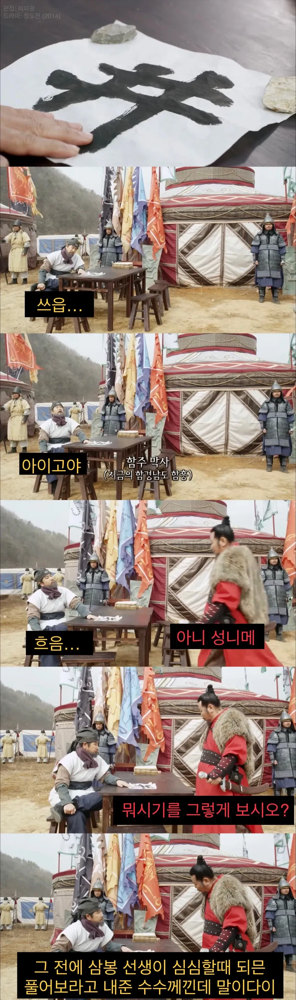
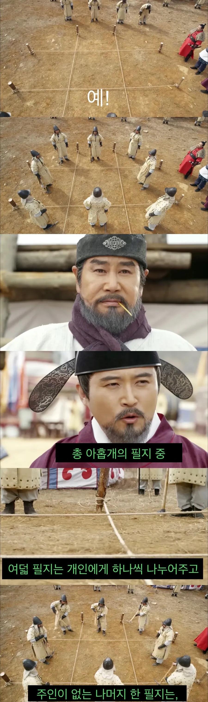
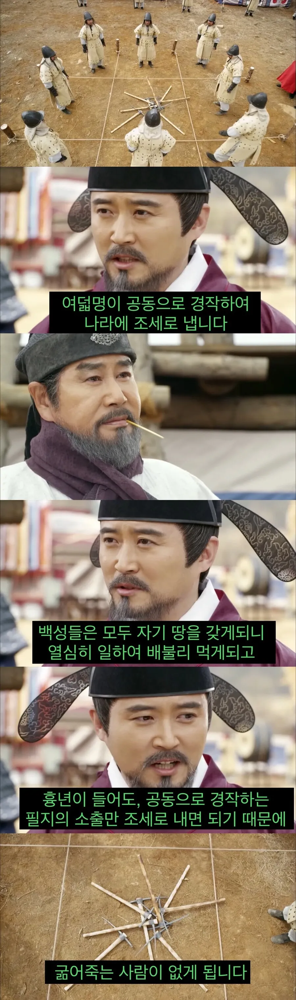
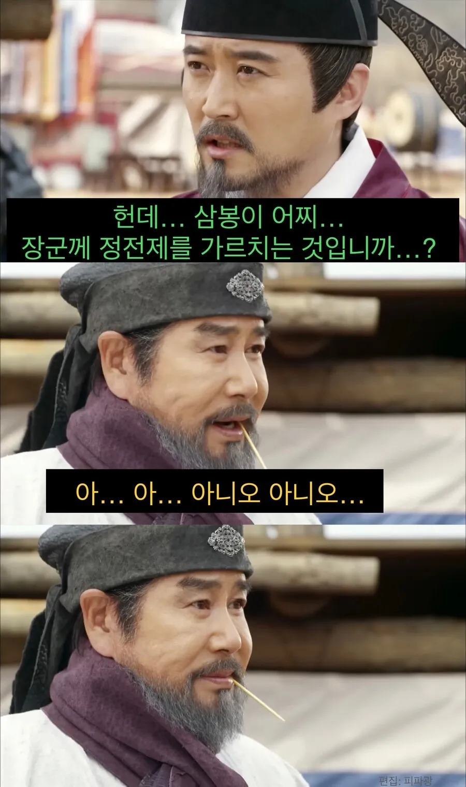

우무르




우무르
집단농장이 성공한 예가 없는것과 같은 이유
경제학과 화폐경제가 위대한건 산출물을 균등하게 평가하고 정량적으로 나타낼수있기 때문임
천만원을 벌었고 10%를 세금으로 내라고하면 걍 백만원 내면됨
그리고 그 백만원이 나쁜백만원이냐 좋은백만원이냐도 생각안할수가있지
즉 저건 화폐가 마땅치않을때 저 공동농장을 좆같이다뤄서 이상적인 정책인데
지금은 오히려 개선해볼여지가 있는거임
돈버는수단은 농사만있는게 아니게되었으니까
나는 대충 세금이 10% 내외면 먹고 살 만 하구나로 이해함.
소득이 많아지면 한 세금 30프로도 나옴
이성계;지란아 지랄마
가운데 땅은 그렇게 피밭이 되었고
중앙땅 하청줄듯ㅋㅋ
여기서 끝이아니다!! 하청에 줄을 잇는 재하청!!!
정전제를 정약용이 주장했고 소히 공산주의 정책임 ㅇㅇ 그래서 북한에서 정약용을 엄청 높게 친다들었음
연기 잘한다 표정 봐라
내~! 역적 아임매!!!
따지고 보면 그 공동 소유 땅이 시민들 세금으로 운영하는 공공시설이나 복지 제도인거지
누군가 애정이 있으면 잘 굴러가고 아니면 망하잖아
현실과 이상은 다르지
그러니까 중앙땅은 방치하고 내땅만 열심히 농사지으라는거지?
아니 중앙땅 할당인 4가마니는 흉년이 들었든 벼들이 월북을 했든 그대로 내고 니땅 세금도 따로 내라고.
모래와 겨가잔뜩 섞인 묵은쌀을 드리겠습니다 ^ ^
뎅겅
장군이 갑자기 나라 다스리는 법을 베운다고?
저때 이성계 이북 말투 그대로 쓰는거 신기했는데
지금까지 그런 묘사 한번도 없었는데
중앙에 점을 찍으면
규동이 된다
중앙땅 소출이 제대로 나오고 나라가 제대로 유지될까
나락 베면서 한줌 빼놓고 털면서 한줌 빼놓고
그냥 세금 안받는 천국 주겠다는 소리
사람은 많이 얻을수록 열심히 살지
포은이 정몽주 아닌가
ㅇㅇ 포은이 정몽주 삼봉은 정도전
대체역사물 경제왕 연산군
읽어보면 경제학의 위대함을 일부분이나마 느낄 수 있지
용의 눈물에서 이방원과 이숙번이 저기선 이성계랑 퉁두란으로 나온거여??
한다해도 측량, 토질 차이에서 에러남.
이론은 그럴싸해 ㅋㅋ
아우야 라면이나 끓여와
이름보니 잘끓일듯
이론은 결국 현실에 적용하기 위해 있는거라
현실에 적용 못 하면 걍 빛 좋은 개살구...
이지란라멘 시조임